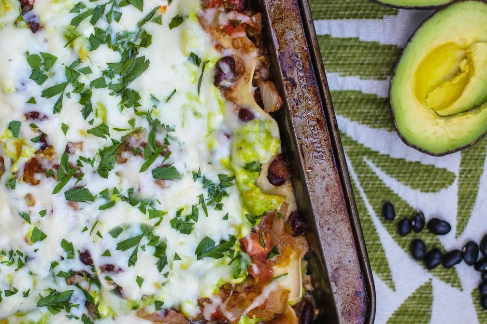

Description
A quick, hearty, and healthy vegetarian lasagna that's filled with avocados, tomatillos, tomatoes, and black beans.
This easy lasagna recipe is the ultimate in comfort food!
A delicious Vegetarian version, this meatless, avocado and black beans cheese lasagna comes together quickly and easily.
Ingredients
- 2 tablespoons olive oil
- 1 onion, chopped
- 2 garlic cloves, minced
- 2 teaspoons cumin
- 6 tomatillos, halved
- 2 ripe tomatoes, quartered
- 1 jalapeño, deseeded
- 1 teaspoon salt
- 2 cups black beans, cooked or canned
- 2 avocados, scooped from their shells and roughly chopped
- 2 1/2 (+/-) cups mozzarella
- 12 ounces cottage cheese
- 1egg, lightly beaten
- 1 teaspoon garlic powder
- 1/2 teaspoon onion powder
- 1 packet lasagna noodles
- lemon wedges
Steps
- Bring a large pot of salted water to boil and cook entire box of lasagna noodles for 8-ish minutes in boiling water.
Drain noodles and rinse with cold water so they stop cooking.
- While the noodles are cooking, preheat the oven to 375 degrees. Pour olive oil in skillet and sauté the chopped onions for
about 5 minutes over medium heat, or until translucent.
- Meanwhile, add halved tomatillos, quartered tomatoes, seeded jalapeno, and a generous pinch of salt in the bowl of your food processor.
Turn on the low setting and mix until the ingredients are the texture of salsa.
- Add garlic and cumin to the skillet with the onions and cook for a couple minutes more. Add tomato-tomatillo sauce and black beans to the onions and garlic.
Stir and reduce heat to simmer.
- Mix cottage cheese, avocado chunks, one lightly beaten egg, 1/2 cup of mozzarella, garlic and onion powders, salt and pepper, and 1/4 cup fresh cilantro
or parsley.
- Now, it's time to assemble the lasagna! Prepare a 9x13 baking dish with olive oil or cooking spray. Ladle about a cup of sauce in the bottom of the pan and
distribute evenly. Lay 3 lasagna noodles on top. Cover noodles with about a cup of sauce.
Cover sauce with about 1/2 cup of avocado-cottage cheese mixture, spreading evenly. Sprinkle with a handful of mozzarella.
- Layer 3 noodles on top of mozzarella and repeat--sauce, cottage cheese-avocado, shredded cheese--three more times, ending with noodles.
Reserve a little extra sauce to spread over the noodles and top with copious amounts of mozzarella cheese and sprinkle with fresh cilantro or parsley.
- Cover pan with foil and bake for 30 minutes. Take foil off of pan and bake 5 more minutes, or long enough for the cheese on top to melt and bubble.
- Serve warm with a squirt of lemon juice.